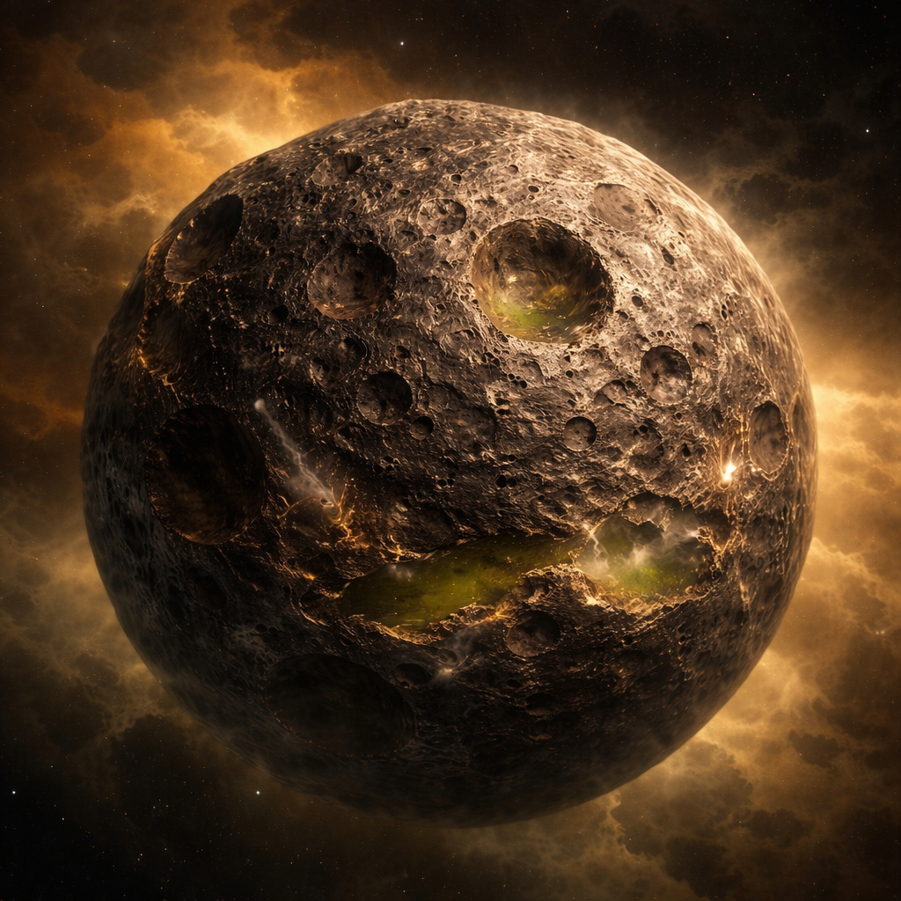

L
Panorama general
Naturaleza del cuerpo metálico y contexto
▶

Naturaleza del cuerpo
Lunaris es un cuerpo astronómico metálico, sólido y no diferenciado, que flota libremente en el espacio. En su estado original, carecía de atmósfera e hidrosfera y no presentaba actividad geológica interna. Sin embargo, en este modelo actualizado se propone la incorporación de una atmósfera densa y una hidrosfera química, lo que modifica parcialmente sus condiciones físicas y superficiales. Todo el objeto está constituido por una litósfera metálica global, continua y masiva, sin separación en corteza, manto y núcleo al estilo de los planetas terrestres.
Desde el punto de vista geológico, el conjunto del cuerpo se comporta como una sola “corteza” metálica rígida.
Principales razones de la ausencia de diferenciación interna:
- Déficit de calor interno: la energía térmica inicial no fue suficiente para producir fusión parcial sostenida ni corrientes convectivas capaces de reorganizar el interior.
- Inexistencia de vulcanismo: al no haber magma ni intrusiones, no se producen procesos de transporte significativo de materiales que generen capas distintas.
- Ausencia de atmósfera y fluidos: sin agua ni gases, no se desarrollan procesos erosivos, sedimentarios ni de alteración que construyan nuevas unidades geológicas.
- Composición íntegramente metálica: la alta conductividad térmica del sistema Fe–Ni permite que cualquier calor residual se redistribuya y disipe rápidamente, impidiendo la formación de zonas fundidas duraderas.